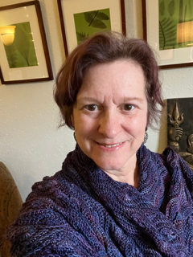

Meet the Practitioners
We are a collaboration of healers, each moving through our own individuation process. Heart Marrow’s intention is to make room for emergent wisdom — from the experienced humans who practice here, toward the people we serve, the unknown future of Heart Marrow itself, and the changing times we live in.
Sarah-Lu Baker (they, we, she) · MFA, RSMT/E
Philosophy
Sarah-Lu believes healing unfolds through relationship, curiosity, and connection to something larger than ourselves — a conviction shaped by more than thirty years at the intersection of human development, the arts, and radical education. Her practice is relational, somatic, and trauma-informed, woven with contemplative practice, astrology, and creativity. She offers adults a space to slow down and meet the fullness of who they are.
Rates
Session and package rates are listed on Sarah-Lu’s site.
EXPLORE SARAH-LU’S PRACTICE →
Tracy Vawter LCSW
Philosophy
For thirty-five years, Tracy has tended spirit as much as mind and emotions — a bridge between the sacred and the everyday. Her practice is a home for empaths and highly sensitive people finding their way in a loud world. She weaves somatic work, archetypal psychology, and nature-based ritual into a practice grounded equally in evidence and mystery.
Rates
$185 per 50 minute session. In-network with a variety of insurance carriers (details on Tracy’s site).
EXPLORE TRACY’S PRACTICE →
Naomi Baker (she, they) · LMFT
Philosophy
Naomi is a seasoned therapist who believes that personal healing is at the heart of the deep and necessary changes our culture and world are currently navigating. She holds space thoughtfully, reflecting both your inherent strengths and your growing edges with curiosity, humility and care.
Rates & Insurance
$220/hour for those who can afford it. A sliding scale is available for others. In-network with a variety of insurance carriers (details on Naomi’s site).
EXPLORE NAOMI’S PRACTICE →